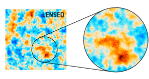

Work in progress
Combining observables
 Every probe of this distribution of matter has its own bias and its own systematic uncertainties. For instance one can look at the distribution of galaxies, but they are a biased tracer of the mass because there is dark matter also where there is no galaxy. On the other hand one can look at the weak lensing effects on the Cosmic Microwave Background, but we only get the integral of the mass up to the last scattering surface, and we have no information of the evolution of the clustering.
This two observables are probing the same signal which is the distribution of the mass, and as such combining them helps in lowering the uncertainties specific to each one of them.
Methods
Cross corelations and stack.
Stellar to halo mass relation
The distribution Understanding how the galaxies are distributed in our universe put constraints on how we evolved from an initial field of infinitesimal fluctuations to the sky we observe today. This field of infinitesimal fluctuations is called the Cosmic Infrared Background and has been observed very accurately by the Planck satellite.
I am interested on the large scale structures of the universe, on the distribution of dark matter in the universe and on its link with baryons. Link between dark matter and stellar mass of galaxies. CMB Lensing to look for dark matter. Forecasts for Euclid, cross correlating CMB Lensing and Euclid probes. Giving seminars at the palais de la découverte.